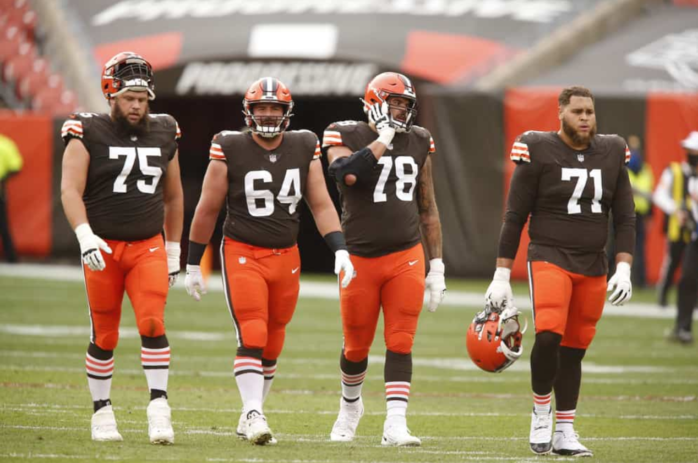

What Really Changed the Browns’ Season in 2020?
By Siddarth Srivastava | March 30, 2021
The offensive line. That’s what. The Browns’ offense was the exact same in most areas from 2019 to 2020. They still had Odell Beckham Jr. and Jarvis Landry, 2 All-Pro receivers. They still had Kareem Hunt and Nick Chubb, 2 All-Pro running backs. They did add Austin Hooper, but he didn’t contribute much outside of blocking. The main difference from 2019 to 2020 was the offensive line. That’s where the magic happened and translated to the entire offense and ultimately the entire team being better.
The Browns offense improved in almost every category, and the primary reason for that was Baker being sacked and pressured the least he’s been in his NFL career. The Browns’ offensive line is the only one in the entire NFL that actually fields 5 All-Pro caliber players. Jack Conklin, their free agent acquisition from Tennessee, was actually the First Team All-Pro right tackle for the 2020 season. Rookie left tackle Jedrick Wills was a stud, especially in the run game, and looks to be the successor to Joe Thomas in Cleveland. Center J.C. Tretter continues to be criminally underrated, and was a top 5 Center according to PFF.
Right guard Wyatt Teller actually graded out as one of the 4 best players in all of football. Yeah, you read that right. Not top 4 guards or even offensive linemen, a top 4 player in all of football(the other 3 being Aaron Donald, Aaron Rodgers, and Travis Kelce). That’s Hall of Fame level company. Teller was an animal all season, and a MAJOR difference maker for them, mauling people all season long. And of course the longest tenured Browns player still left, the only one who was there before the 0-16 season, left guard Joel Bitonio. He made the Pro Bowl this year and was also one of the best guards in the league. This group and their development into maybe the best overall unit in the NFL is what made the difference from 2019 and 2020.
The 2019 tackle duo of Greg Robinson and Chris Hubbard might have been the worst in the entire league. That combined with the play calling having a bunch of long developing deep pass plays resulted in Baker being under pressure constantly and ultimately imploding in many games. New head coach Kevin Stefanski got rid of all that nonsense and implemented a system that utilized running the ball and doing a lot of play action, basically putting Baker in as many favorable situations as possible. With how deadly the Browns run game was this year, a lot of bootlegs and rollouts and clean pockets were there for Baker and it made his life much easier. It also allowed receivers to get open more and allow for easier throws and more chunk plays. None of this would have been possible if the offensive line wasn’t as dominant as it was.
They allowed 153 pressures in 16 games in 2019, that number dropped to 87 in 18 games in 2020. Basically cut in half, a night and day difference. This is the reason why the Browns turned it around in 2020. The vastly improved offensive line allowed Baker to play better and have easily the best season of his career, which made the whole offense better, and helped them carry a bottom 12 defense to the Divisional Round. Football is always won in the trenches, no matter how much people try to make it seem otherwise. You can have all the best receivers and runningbacks you want and even a great quarterback, but like we saw in the Super Bowl, even that will accomplish nothing if you don’t have a good offensive line. The Browns learned from their mistakes and decided to invest and commit to protecting Baker, and it paid off spectacularly. Look for them to only keep improving and for Baker to have an ever better season next year.